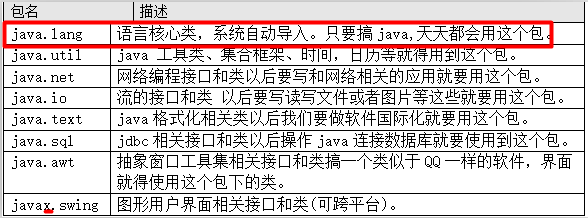

定义变量的语法:
数据类型 变量名 = 值;
--------------------------------------------------
变量根据在类中定义位置的不同,分成两大类:
成员变量: 全局变量/字段(Field),不要称之为属性(错误). 直接定义在类中,方法外面.
1):类成员变量. 使用static修饰的字段.
2):实例成员变量. 没有使用static修饰的字段.
局部变量: 变量除了成员变量,其他都是局部变量.
1): 方法内部的变量.
2):方法的形参.
3):代码块中的变量,一对{}.
--------------------------------------------------------
变量的初始值:初始化才会在内存中开辟空间.
成员变量: 默认是有初始值的(看图)
局部变量: 没有初始值,所以必须先初始化才能使用.
--------------------------------------------------------
变量的作用域:
变量根据定义的位置不同,也决定了各自的作用域是不同的. 看变量所在的那对{}.
成员变量: 在整个类中都有效.
局部变量: 在开始定义的位置开始,到紧跟着结束的花括号为止.
--------------------------------------------------------
成员变量,可以先使用后定义,局部变量必须先定义而后才能使用.
局部变量定义后，必须显示初始化后才能使用，因为系统不会为局部变量执行初始化操作。这就意味着，定义局部变量后，系统并未为这个变量分配内存空间。
直到程序为这个变量赋值时，系统才会为局部变量分配内存，并将初始值保存到该内存中。
局部变量不属于任何类或实例，因此它总是保存在其所在方法的栈内存中。
基本数据局部变量：直接把这个变量的值保存到该变量所对应的内存中。
引用数据局部变量：这个变量内存中存的是地址,通过该地址引用到该变量实际引用堆里的的对象。
栈内存中的变量无需系统垃圾回收，其往往随方法或代码块的运行结束而结束。
什么时候使用成员变量和局部变量：
1：考虑变量的生存时间，这会影响内存开销。
2：扩大变量作用域，不利于提高程序的高内聚。
开发中应该尽量缩小变量的作用范围，如此在内存中停留时间越短，性能也就更高。
不要动不动就使用static修饰,一般,定义工具方法的时候,static方法需要访问的变量,该变量属于类,此时才使用static修饰字段.
也不要动不动就使用成员变量,因为存在着线程不安全问题,能使用局部变量尽量使用局部变量.
package
在开发中,我们存在几百上千个Java文件,如果所有的Java文件都在一个目录中,管理起来也很痛苦.
此时,我们可以使用生活中的解决方案,不过呢,此时在Java中,我们把这个特殊文件夹称之为包(package).
关键字:package ,专门用来给当前Java文件设置包名.
语法格式: package 包名.子包名.子子包; 必须把该语句作为Java文件中,并且是第一行代码(所有代码之前).
此时编译命令: javac -d . Hello.java
javac -d . Hello.java:
如果此时Hello.java文件中没有使用package语句,表示在当前目录中生成字节码文件.
如果此时Hello.java文件中使用了package语句,此时表示在当前目录中先生成包名,再在包中生成字节码文件.
运行命令: java 包名.类名;
package最佳实践 :
1):包名如何定义. 自定义的包名,不能以java.打头,因为Java的安全机制会检查.
1>:包名必须遵循标识符规范/全部小写.
2>:企业开发中,包名才有公司域名倒写.
在Android中,如果package中使用了_,则不能部署到模拟器上.此时,我们也可以使用一个字母来代替_.
比如:package com.m520it; package com.a520it;
----------->
格式: package 域名倒写.模块名.组件名;
package com._520it.pss.util;----------------->进销存模块中专门存储工具类的包.
2):类的名称:
类的简单名称: 定义类的名称. PackageDemo.
类的全限定名称: 包名.类名; com._520it.hello.PackageDemo.
3):在开发中,都是先有package而后在package中再定义类.

import
当A类和B类不在同一个包中,若A类需要使用到B类,此时就得让A类中去引入B类.
注意:在这里演示import的时候,因为没有学习public的原因以及Editplus工具的原因,我不会演示去引入自定义带package的类.
我们演示,咱们之前学习过的 数组的工具类:Arrays类,该类在java.util包中.
Arrays类的全限定名:java.util.Arrays
-------------------------------------------------------------------------
没有使用import之前,操作不在同一个包中的类,得使用全限定名来操作.
静态导入(static import):

在上述代码中,每次使用Arrays类中的静态方法,即使我们使用了import语句,但是每次都需要使用Arrays类名去调用静态方法.
我就觉得不爽, 我期望:我能把Arrays类中的静态成员作为自己的静态成员一样调用.
解决方案:
语法格式:
import static 类的全限定名.该类中的static成员名;

import static 类的全限定名.*;此时的*表示当前类的任意使用到的静态成员.
--------------------------------------------------------------------------------------------------------------------------------
通过反编译工具,其实所谓的静态导入也是一个语法糖/编译器级别的新特性.
在实际开发中,我们不使用静态导入,因为如此,分不清某一个静态方法或字段来源于哪一个类.
Eclipse工具,当格式化代码的时候,就自动取消了所有的静态导入,变成使用类名调用.
封装
什么是封装(面向对象三大特征之一)？
① 把对象的状态和行为看成一个统一的整体，将二者存放在一个独立的模块中(类);
② "信息隐藏", 把不需要让外界知道的信息隐藏起来,尽可能隐藏对象功能实现细节，向外暴露方法，保证外界安全访问功能; 把所有的字段使用private私有化,不准外界访问,把方法使用public修饰,允许外界访问.
把所有数据信息隐藏起来,尽可能隐藏多的功能,只向外暴露便捷的方法,以供调用.
封装的好处:
1):使调用者正确,方便地使用系统功能,防止调用者随意修改系统属性.
2):提高组件的重用性.
3):达到组件之间的低耦合性(当某一个模块实现发生变化时,只要对外暴露的接口不变,就不会影响到其他模块).
通过什么来实现隐藏和暴露功能呢？
--------------------------------------------------------------------------
高内聚：把该模块的内部数据，功能细节隐藏在模块内部，不允许外界直接干预。
低耦合：该模块只需要给外界暴露少量功能方法。
访问权限修饰符
封装其实就是要让有些类看不到另外一些类里面做了什么事情。所以java提供了访问权限修饰符来规定在一个类里面能看到什么，能暴露什么。
--------------------------------------------------------------------------------------------
访问权限控制：
private: 表示私有的, 表示类访问权限. 只能在本类中访问,离开本类之后,就不能直接访问.
不写(缺省): 表示包私有,表示包访问权限. 访问者的包必须和当前定义类的包相同才能访问.
protected: 表示子类访问权限,同包中的可以访问,即使不同包,但是有继承关系,也可以访问.
public: 表示全局的,可以公共访问权限,如某个字段/方法,使用了public修饰,则可以在当前项目中任何地方访问.

一般的:字段都使用private修饰,表达隐藏,为了安全性.
拥有实现细节的方法,一般使用private修饰,不希望外界(调用者)看到该方法的实现细节.
一般的,方法我们使用public修饰,供外界直接调用.
--------------------------------------------------------------------------------------
//直接暴露给外界,供调用者直接调用即可
public void doWork()
{
methodA();
methodB();
methodC();
}
//仅仅只是完成了部分操作,不需要调用者调用
private methodA(){}
private methodB(){}
private methodC(){}
--------------------------------------
一般的,我们不用缺省,即使要使用,也仅仅是暴露给同包中的其他类.
protected:一般,在继承关系中,父类需要把一个方法只暴露给子类.
JavaBean规范
JavaBean 是一种JAVA语言写成的可重用组件(类).
必须遵循一定的规范:
1):类必须使用public修饰.
2):必须保证有公共无参数构造器,即使手动提供了带参数的构造器,也得提供无参数构造器..
3):包含了属性的操作手段(给属性赋值,获取属性值).
分类:
1):复杂:UI,比如Button,Panel,Window类.
2):简单:domain,dao,service组件,封装数据,操作数据库,逻辑运算等.
(封装有字段,并提供getter/setter)
成员:
1):方法:Method
2):事件:event
3):属性:property
--------------------------------------------------------
属性:
1):attribute:表示状态,Java中没有该概念,很多人把字段(Field)称之为属性(attribute).不要把成员变量叫做属性.
2):property: 表示状态,但是不是字段,是属性的操作方法(getter/setter)决定的,框架中使用的大多是是属性.
--------------------------------------------------------
我们讲完封装之后,说应该把对象中信息隐藏起来(把类中的字段全部使用private修饰起来,其他类不能直接访问).
为了能让外界(其他类)访问到本类中的私有字段成员,我们专门提供getter以及setter方法.
字段: private String name;
getter方法: 仅仅用于获取某一个字段存储的值.
//去掉get,把首字母小写,得到name1.此时name1才是属性.
public String getName1()
{
return name;//返回name字段存储的值
}
如果操作的字段是boolean类型的,此时不应该叫做getter方法,而是is方法,把 getName 变成 isName.
setter方法: 仅仅用于给某一个字段设置需要存储的值.
public void setName1(String n)
{
name = n;//把传过来的n参数的值,存储到name字段中
}
每一个字段都得提供一对getter/setter.以后使用Eclipse工具之后getter/setter都是自动生成.
在JavaBean中有属性这个概念,只有标准情况下字段名和属性名才相同.
this关键字
引出this关键字:
需求:定义一个User类,提供name,age字段,以及相应getter/setter方法.
什么是this:
表示当前对象,什么优势当前对象.
this主要存在于两个位置:
构造器中: 就表示当前创建的对象.
方法中: 哪一个对象调用this所在的方法,那么此时this就表示哪一个对象.
当一个对象创建之后,JVM会分配一个引用自身的引用:this.
使用this:
① 解决成员变量和参数(局部变量)之间的二义性,必须使用;
② 同类中实例方法间互调(此时可以省略this,但是不建议省略)。
③ 将this作为参数传递给另一个方法;
④ 将this作为方法的返回值(链式方法编程);
⑤ 构造器重载的互调，this([参数])必须写在构造方法第一行;
⑥ static不能和this一起使用;
当字节码被加载进JVM,static成员以及存在了.
但是此时对象还没有创建,没有对象,就没有this.


构造器和setter方法选用
创建对象并给对象设置初始值有两种方式:
方式1:先通过无参数构造器创建出一个对象,再通过对象调用相应的setter方法.
方式2: 直接调用带参数的构造器,创建出来的对象,就有了初始值.
--------------------------------------------------------------
通过构造器和通过setter方法都可以完成相同的功能.
给对象设置数据:
1):setter注入(属性注入).
2):构造注入.
--------------------------------------------------------------
如何选择:
1:如果存在带参数的构造器,方式2是比较简洁的.
2:如果在构建对象的时候需要初始化多个数据,如果使用方式2,那么构造器得提供N个参数,参数过大,不直观,此时方式1,简单明了.
3:圆对象,如何画圆. 圆对象,必须根据半径来确定对象.
就应该在构建圆对象的时候,就要确定半径值.
有时候,需要根据数据来构建对象,此时优先选用构造器方式.
------------------------------------------------------------------------------------------------
其他时候,任选.